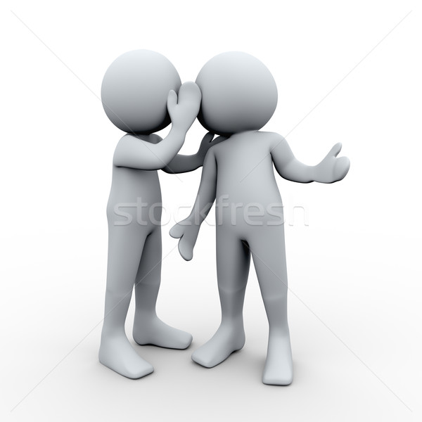

De maneira conceitual, bullying por exclusão social é uma forma de agressão relacional que envolve
a rejeição proposital e repetida de um indivíduo para prejudicá-lo, utilizando para isso a manipulação dos
relacionamentos interpessoais.
A exclusão social é quando, por algum aspecto físico ou comportamental, uma
pessoa é excluída de um círculo social ou de atividades em grupo por conta da forma como esta pessoa é.
O bullying por exclusão pode ser sutil. Ele ocorre quando, por exemplo: dois amiguinhos tem um segredo, mas não te contam. Ou até quando é criado um grupo da sala, mas não te adicionam. A exclusão pode ser desta forma, com sinais pequenos e que parecem inofensivos — mas que tem potencial para deixar alguém chateado ou de modo "passivo-agressivo", espalhando boatos ou fofocas sobre alguém, fazendo com que se afastem desta pessoa.
Você não precisa ser amigo de todo mundo, nem incluir todos em tudo que você faz — até porque, você
tem seus próprios amigos e círculo social, e não é obrigado a incluir ninguém. O fato de você ficar com seus
amigos e com pessoas que você conversa não é excluir o outro, mas fazer isso com a intenção de deixar alguém
de fora, sim. Então, para evitar o bullying por exclusão social, é importante que você reflita sobre suas ações
e como elas podem afetar os outros.
Tente se colocar no lugar dessa pessoa e pense em como você se sentiria se
estivesse no lugar dela. Além disso, é importante que você seja gentil e respeitoso com os outros, independentemente
de suas diferenças. Lembre-se de que todos merecem ser tratados com dignidade e respeito.
O bullying por exclusão social é um problema sério que pode ter consequências negativas para a saúde mental
e emocional das vítimas. É importante que todos nós estejamos cientes desse tipo de bullying e trabalhemos juntos
para combatê-lo.
Se você testemunhar alguém sendo excluído ou isolado, não fique em silêncio. Fale com um adulto de confiança,
como um professor, conselheiro escolar ou pai/mãe, e peça ajuda para lidar com a situação. Juntos, podemos criar
um ambiente mais inclusivo e acolhedor para todos!